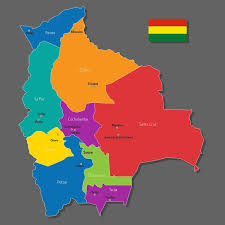
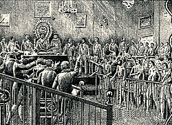
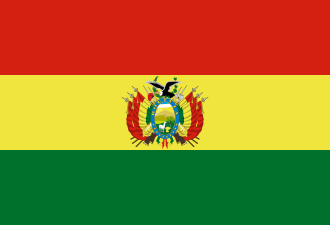

Bolivia, oficialmente el Estado Plurinacional de Bolivia (en quechua: Puliwya Achka Aylluska Mamallaqta; en aimara: Wuliwya Walja Ayllunakana Marka; en guaraní: Tetã Hetate'ýigua Mborívia), es un país soberano ubicado en el oeste de América del Sur, miembro de la Comunidad Andina,[10][11]constituido políticamente como un Estado social plurinacional, unitario, descentralizado y con autonomías.[12] El país está organizado en nueve departamentos, ciento doce provincias.[10] trescientos cuarenta municipios y tres regiones autónomas especiales.[13] La capital oficial es Sucre,[14] que alberga al órgano judicial, mientras que la sede de Gobierno es la ciudad de La Paz, que ejerce como capital de facto y que alberga a los órganos ejecutivo, legislativo y electoral. La ciudad más poblada es Santa Cruz de la Sierra.
Historia de boliviaEn el actual territorio boliviano, se desarrollaron a lo largo de la historia antiguas culturas precolombinas como Tiahuanaco, la Cultura Hidráulica de las Lomas y el Imperio incaico. Después, el Imperio español dominó el territorio hasta que el país se independizó en 1825, año a partir del cual adoptó el nombre de Bolivia. Al haber heredado las tradiciones del mestizaje colonial y las culturas precolombinas, es un país multiétnico y pluricultural, rico en la mezcla de tradiciones y folclore de habitantes mestizos, indígenas, blancos descendientes de criollos, afrobolivianos, y en menor proporción, de migrantes europeos y asiáticos. |
 |
Simbolos patriosConstitucionalmente, los emblemas nacionales son la bandera tricolor rojo, amarillo y verde, el himno nacional, el escudo de armas, la wiphala (bandera de la cultura aimara), la escarapela, la flor de la kantuta y la flor del patujú. |
 |
Departamentos
|